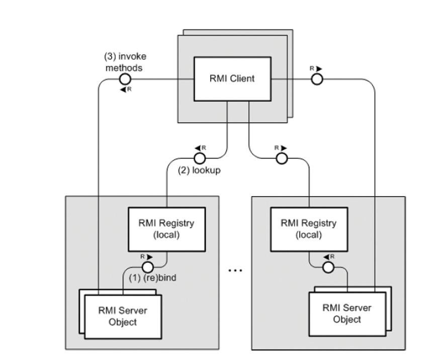
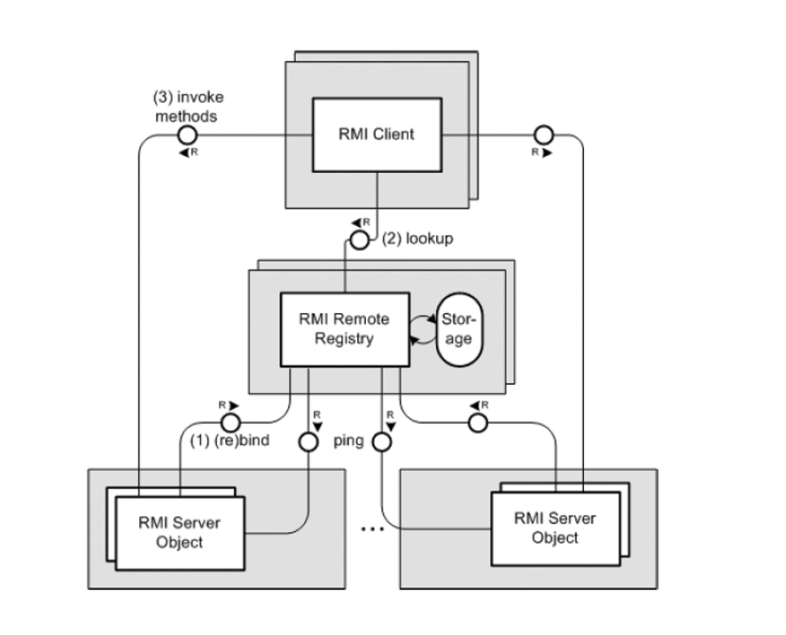

Dr. Dobb's Journal December 2008
A Remote Java RMI Registry
A custom registry that objects can register with remotely
By Oliver Haase, Juergen Waesch, and Bo Zhao
Oliver and Jürgen are computer science professors at Konstanz University of Applied Sciences and can be reached at haase@htwg-konstanz.de and juergen.waesch@htwg-konstanz.de, respectively. Bo recently received his master's degree in communication systems engineering from Konstanz University of Applied Sciences and can be reached at zhao.konstanz@googlemail.com.
Java's platform independence and built-in network support make it well suited for distributed computing. One key feature in this context is Java Remote Method Invocation (RMI) technology (java.sun.com/javase/technologies/core/basic/rmi/index.jsp), which lets you use the familiar method invocation paradigm to communicate between remote Java objects. This abstraction simplifies the development process because you need not deal with communication protocols, on-the-wire data representation, and connection management.
Sun Microsystems' Java Runtime Environment (JRE) includes the rmiregistry tool, a reference implementation of the java.rmi.registry.Registry interface. This interface contains methods that let RMI servers bind remote object references to logical names, and allows RMI clients to lookup these bindings and download the associated object references.
To avoid security issues (such as malicious code rebinding existing object references), the server-side methods bind, rebind, and unbind can be invoked only locally, while the client-side methods list and lookup can be invoked remotely. Figure 1 is an overview of the standard Java RMI system architecture.
[Click image to view at full size]

Figure 1: Standard Java RMI system architecture with local RMI registries in FMC notation (www.fmc-modeling.org). (1) RMI server object (re)binds itself to the local RMI registry running on the same machine—(re)binding to a remote RMI registry is prohibited (AccessException). (2) RMI clients lookup the specific RMI registry to get a remote reference (a client stub), to the server object. (3) RMI client invokes methods on the remote server object via the client stub.
The downside of this trust model, however, is that it requires the host that runs rmiregistry and the RMI server object to be externally accessible. This restriction might be acceptable for heavyweight, centrally administrated applications, but not for highly dynamic, massively distributed applications, such as peer-to-peer applications. Also, the resulting distribution model prohibits location transparency, as an RMI client that retrieves a remote reference from an rmiregistry automatically knows the object's location. A further shortcoming of the rmiregistry is that all bindings are kept in main memory only, rather than stored persistently.
Remote RMI Registry
We have built a custom RMI registry that lets remote RMI server objects invoke bind, rebind, and unbind methods. For added robustness, the bindings in the remote RMI registry are stored persistently. Figure 2 gives an overview of the extended Java RMI system architecture using such a remote RMI registry.
The driver for this architectural extension was a project on a peer-to-peer computing system that builds on Java RMI. To provide connectivity even across firewalls and network address translation (NAT) boxes, we needed a mechanism for NAT traversal that is more lightweight than HTTP tunneling. We opted for a STUNT-enhanced Java RMI extension that uses hole punching for NAT traversal. (STUNT is short for "Simple Traversal of UDP Through NATs and TCP"; see nutss.gforge.cis.cornell.edu/pub/draft-guha-STUNT-00.text). For the STUNT-enhanced RMI communication protocol, RMI registries must be publicly accessible, whereas the RMI server objects (the peers) can reside behind NAT borders.
[Click image to view at full size]

Figure 2: Extended Java RMI system architecture with a remote RMI registry in FMC notation (www.fmcmodeling.org). (1) An RMI server object (re)binds to the remote RMI registry. The bindings in the remote RMI registry are stored persistently—to garbage collect invalid bindings, the remote RMI registry periodically pings the server objects. (2) RMI clients lookup the remote RMI registry to get the remote reference to the server object. (3) Remote method invocation is done as usual.
Independent of that project, a remote RMI registry provides added value to Java RMI because it enables new distribution models. For example, instead of several RMI registries collocated with the distributed server objects, a single central RMI registry can be run. This simplifies the operation and maintenance of a Java RMI-based distributed system, and provides transparency of the server object locations, which in turn allows for transparent object migration. Our remote Java RMI registry was designed to meet the following goals:
- Complete transparency to RMI servers and clients. Our primary goal was to provide complete transparency in the sense that RMI servers and RMI clients can use our custom remote registry instead of the standard registry without any change to their code. To meet this objective, the custom registry must not only provide the standard Registry interface, but RMI clients and servers must be able to use the getRegistry method of the JRE built-in class LocateRegistry to obtain a reference to our custom registry. While other remote registries have been described, we are not aware of one that can be accessed through the LocateRegistry.getRegistry method.
- Simple trust model without need for authentication and authorization. Authentication and authorization is not only a complex issue, but its use would also require extensions of the registry interface and thus negate the transparency mentioned earlier. We thus opted for the following simple, straightforward extension of the trust model of the reference implementation: When a name is bound, we store the sender IP address together with the <name, reference> mapping. Only this sender may rebind or unbind the same name.
- Persistent storage of the <name, reference> bindings. To allow for a lossless registry reboot, we persistently store the bindings on hard-disk. Each time a binding is added, changed, or removed, the persistent copy is updated. Because of this persistent storage, invalid bindings must be periodically garbage collected.
Implementation
Even though the implementation of the core functionality—that is, the storage and retrieval of the <name, reference, owner IP> mappings—is rather trivial, the overall registry implementation is not, as the following considerations show:
- A remote RMI registry instance is itself an RMI server object (that provides the Registry remote interface). An (ordinary) RMI server or client that needs a reference to the registry uses the getRegistry method of the standard class LocateRegistry. This bootstrapping method is the only one that synthesizes a stub for a remote object, rather than getting it from the remote object itself.
- Each stub, however, contains the ObjID of the remote object that is created when the object is exported. LocateRegistry assumes the registry to have a special value, REGISTRY ID, as the ObjID. Unfortunately, the Java API does not let you specify the ObjID when exporting a remote server object. As a consequence, we had to take advantage of two classes of Sun's JRE implementation—sun.rmi.server.UnicastServerRef and sun.rmi.transport.LiveRef to assign the required ObjID to the exported remote registry object.
- Class RemoteRegistry contains our custom implementation of the standard Registry remote interface. Listing One, the constructor, shows how a newly instantiated RemoteRegistry object is exported by means of the two aforementioned classes.
- In the first step, a LiveRef object with the required ObjID and the listener port is created. As can be seen, the special value REGISTRY ID is defined as a constant in class ObjID. The port can be set when the remote registry is started; by default, the well-defined registry port 1099 is used. In a second step, the LiveRef is cast to the type UnicastServerRef, then used to export the newly created RemoteRegistry object. The second parameter to the exportObject call is not used in the UnicastServerRef implementation, and can thus be set to null.
- In pre-5.0 Java versions, the rmic tool had to be used to generate the client stub and server skeleton classes for a given remote object implementation. When the server object was exported, both classes were instantiated and the server skeleton was registered with the remote reference layer of the Java virtual machine.
- Since Java 5.0, generating specific stub and skeleton classes has become obsolete. Now, client stubs are instances of class java.lang.reflect.Proxy, and on the server side, the virtual machine can delegate incoming remote invocations directly to the RMI server object without the need for a skeleton at all.
- The aforementioned method getRegistry of class LocateRegistry, however, synthesizes an old style stub of type RegistryImpl_Stub by default. The reason is backward compatibility; pre-5.0 clients cannot deal with Proxy stubs but would throw an exception when they encounter one. Only if the Java property java.rmi.server.ignoreStubClasses is set to True, LocateRegistry synthesizes a new style Proxy stub. Again, to achieve full transparency for our custom registry implementation (as well as for the same backward compatibility reason), we do not require the ignoreStubClasses property to be set. Instead, we used the rmic tool to generate a server skeleton, because a pre-5.0 stub expects to communicate with a server skeleton on the server side.
- When an RMI server object registers with a registry, the fact that the registry maintains a reference to it prevents the RMI server object from being garbage collected. Our custom RMI registry, however, does not register itself with a registry and thus must be explicitly protected from garbage collection. This is achieved by holding a static reference to the remote registry in the registry implementation class itself.
- In order to garbage collect outdated bindings, the validity of each binding is periodically checked by connecting with the RMI object's server socket. If a registered stub contains a custom client socket factory, then this factory must be used for the attempt to set up a connection to the registered RMI server object. If the connection attempt fails, the respective binding is removed from the list of valid bindings.
- Because a remote registry must be able to dynamically download the implementation classes of the RMI objects to be registered, it must be run under the control of a security manager. We have included the policy file (Listing Two) in the executable jar file that contains the remote registry (available online; see www.ddj.com/code/).
- The SocketPermission is necessary for clients to be able to contact the remote registry. The RuntimePemission lets the remote registry dynamically download code; the FilePermission is needed for the persistent storage of the bindings in file .rrrbindings in the current directory.
public RemoteRegistry (int port) throws RemoteException {
...
LiveRef lref = new LiveRef (new ObjID(ObjID.REGISTRY_ID),port);
new UnicastServerRef (lref).exportObject (this,null);
}
Listing One
grant {
permission java.net.SocketPermission "*:*",
"connect,accept,resolve,listen";
permission java.lang.RuntimePermission
"accessClassInPackage.sun.rmi.*";
permission java.io.FilePermission".rrrbindings",
"read write,delete";
};
Listing Two
Usage
Listings Three and Four illustrate the server and client side usage of our remote RMI registry (also see Figure 2).
Listing Three is a complete example for the definition of a simple RMI server object. It comprises the remote interface Hello, the implementation class HelloImpl, as well as the class HelloSetup. The latter class contains the code for startup—setting the code base from where RMI clients can download server object's code, instantiating and exporting the RMI server object, locating the remote registry, and (re)binding the server object with the remote RMI registry. The use of our remote RMI registry is completely transparent to the RMI server; no modifications have been made to the standard RMI code. With the standard RMI registry, however, the call registry.rebind("hello", stub); would have thrown an AccessException. With our custom RMI Registry, RMI servers are allowed to invoke bind, rebind, and unbind methods of a remote RMI Registry.
Listing Four shows a sample RMI client that uses the hello RMI server object. Exactly as with the standard RMI architecture, the client locates the RMI Registry, looks up the hello server object, and then invokes methods at the server object.
// Remote interface
public interface Hello extends Remote {
String getHello() throws RemoteException;
}
// Implementation class
public class HelloImplimplements Hello {
public String getHello() throws RemoteException {
return "hello, world" ;
}
}
// Startup of RMI serverobject, including registration of
// the instantiated server object with remote RMI registry
public class HelloSetup {
public static void main (String[] args) throws
UnknownHostException,RemoteException,
MalformedURLException,NotBoundException,
InterruptedException,AlreadyBoundException {
System.setProperty ("java.rmi.server.codebase",
"http://192.168.2.32/hello.jar");
Hello stub = (Hello) UnicastRemoteObject.
exportObject (new HelloImpl(),0);
//registration with remote RMI-Registry is now possible
Registry registry = LocateRegistry.getRegistry ("192.168.2.31");
registry.rebind ("hello",stub);
System.out.println ("Successfully registered.");
}
}
Listing Three
public class HelloClient {
public static void main (String[] args) throws
RemoteException,NotBoundException {
Registry registry = LocateRegistry.getRegistry ("192.168.2.31");
Hello server = (Hello) registry.lookup ("hello");
System.out.println (server.getHello ());
}
}
Listing Four
Conclusion
A remote RMI registry is useful in many distribution scenarios. A completely transparent custom registry implementation needs to resolve several interesting technical obstacles, such as how to export a remote object with a given ObjID, or how to check the validity of an existing binding. The complete source code as well as the executable jar file can be found at the RRR project homepage (www-home.htwg-konstanz.de/~haase/hp/RRR.html).